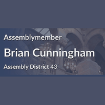

The district
 City Council
City Council State Assembly
State Assembly Congress
Congress Subway
Subway Citi Bike
Citi Bike NYC Ferry
NYC FerryTurn layers on and off. Tap an official's logo or a board's seal for its page. Zoning and land use lot by lot are on the land use map.
About
State Senator Kevin S. Parker represents State Senate District 21. It sits in Brooklyn.
The district overlaps community boards Brooklyn 12, Brooklyn 14, Brooklyn 17 and Brooklyn 18.
It is policed by the 63rd, 66th, 67th and 70th Precincts.
It overlaps council districts 40, 45 and 46 and Assembly districts 41, 42, 44, 58 and 59.
Members of the State Senate serve two year terms.
Next on the ballot in November 2026. Find your poll site and sample ballot there, or see what is coming up on the calendar.
State Senate District 21 in numbers
U.S. Census Bureau, American Community Survey 2019-2023 5-year estimates.
Committees
Contact
Overlap
Community boards


Bars show how many of the district's election districts fall in each board.
Overlapping elected officials





| Brooklyn CB 18 | 47% of the senate district | 44% of it |
| Brooklyn CB 17 | 26% of the senate district | 60% of it |
| Brooklyn CB 14 | 23% of the senate district | 62% of it |
| Brooklyn CB 12 | 4% of the senate district | 9% of it |
| 63 Precinct | 47% of the senate district | 45% of it |
| 67 Precinct | 26% of the senate district | 60% of it |
| 70 Precinct | 23% of the senate district | 62% of it |
| 66 Precinct | 4% of the senate district | 9% of it |
| Sector 63A | 16% of the senate district | 86% of it |
| Sector 63C | 13% of the senate district | 99% of it |
| Sector 63B | 10% of the senate district | 15% of it |
| Sector 70B | 9% of the senate district | 82% of it |
| Sector 63D | 8% of the senate district | 99% of it |
| Sector 67D | 8% of the senate district | 74% of it |
| Sector 67B | 7% of the senate district | 100% of it |
| Sector 70D | 6% of the senate district | 75% of it |
| Sector 67E | 6% of the senate district | 56% of it |
| Sector 67A | 5% of the senate district | 70% of it |
| Sector 70C | 5% of the senate district | 100% of it |
| Sector 66D | 4% of the senate district | 45% of it |
| School District 22 | 74% of the senate district | 42% of it |
| School District 18 | 14% of the senate district | 17% of it |
| School District 17 | 8% of the senate district | 14% of it |
| School District 20 | 3% of the senate district | 2% of it |
| School District 21 | 1% of the senate district | 1% of it |
| School District 15 | 1% of the senate district | 1% of it |
| Council District 45 | 51% of the senate district | 95% of it |
| Council District 46 | 31% of the senate district | 24% of it |
| Council District 40 | 16% of the senate district | 46% of it |
| Council District 39 | 3% of the senate district | 5% of it |
| Assembly District 59 | 31% of the senate district | 24% of it |
| Assembly District 42 | 25% of the senate district | 89% of it |
| Assembly District 41 | 17% of the senate district | 37% of it |
| Assembly District 58 | 17% of the senate district | 39% of it |
| Assembly District 44 | 8% of the senate district | 20% of it |
| Assembly District 48 | 1% of the senate district | 4% of it |